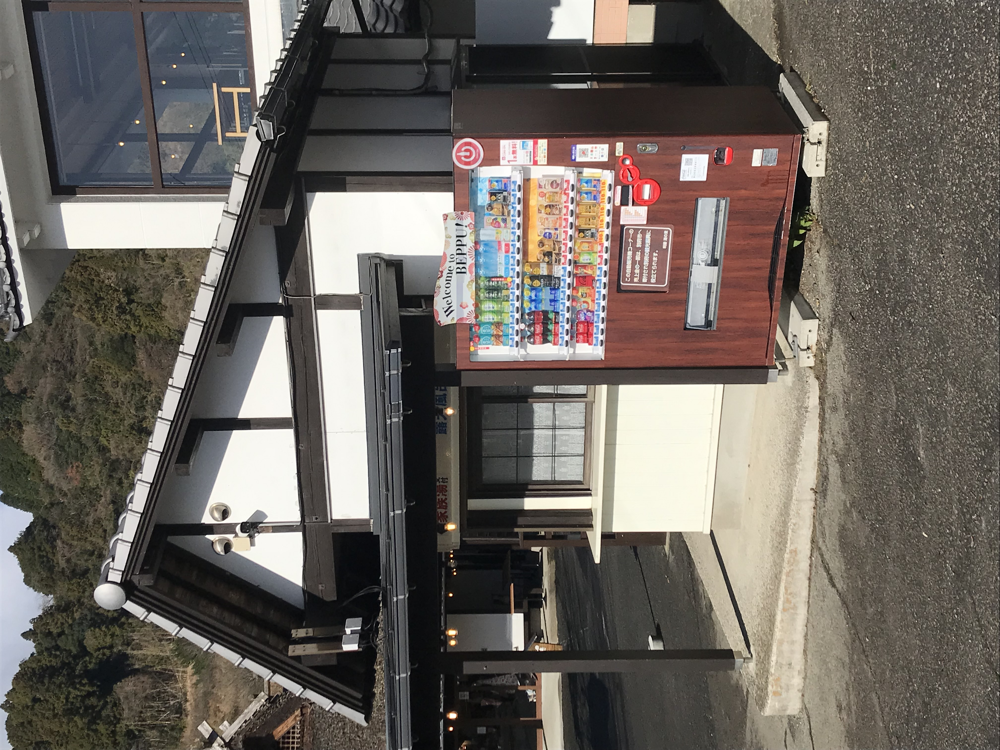
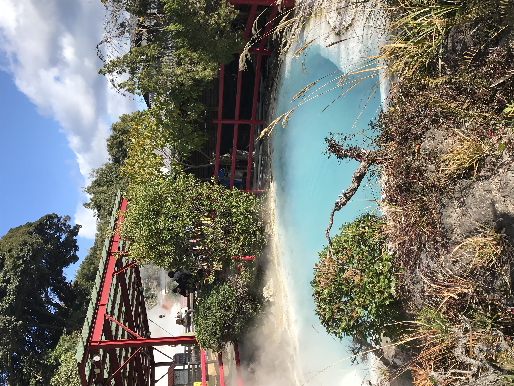
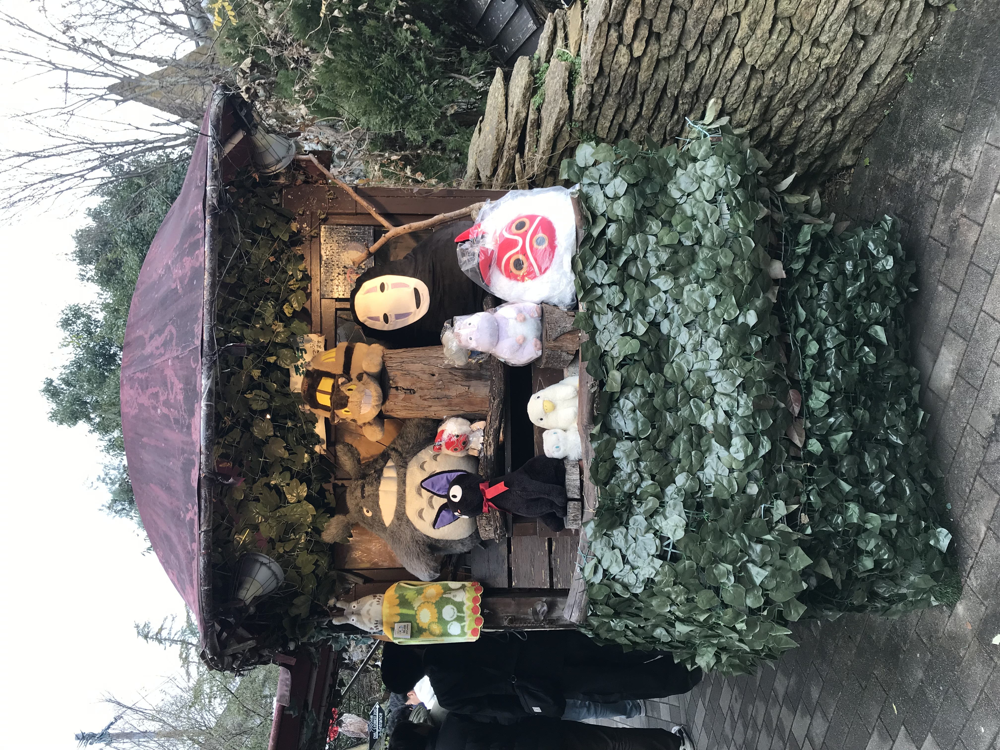
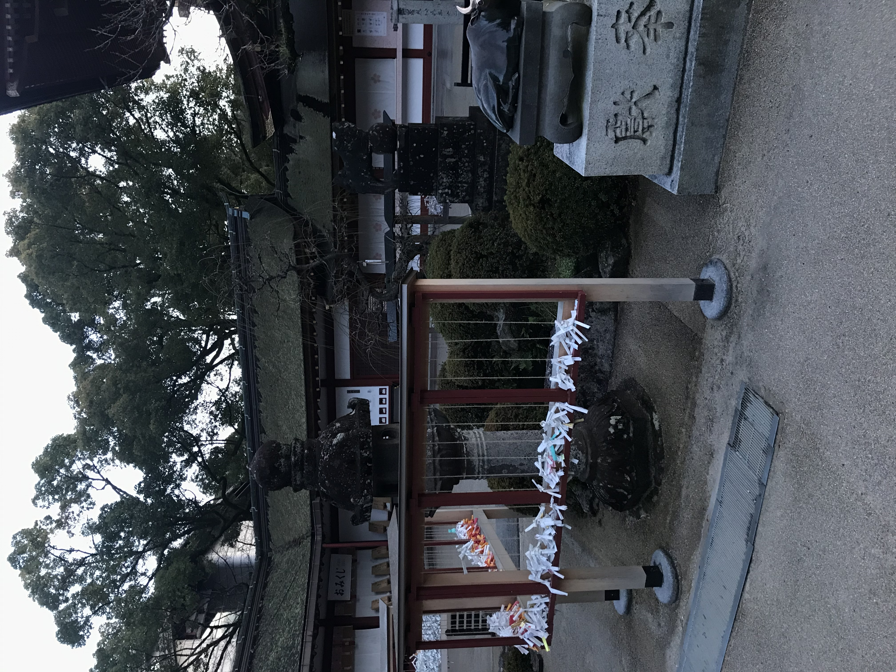
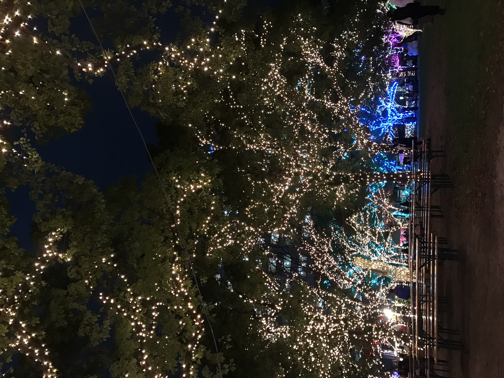
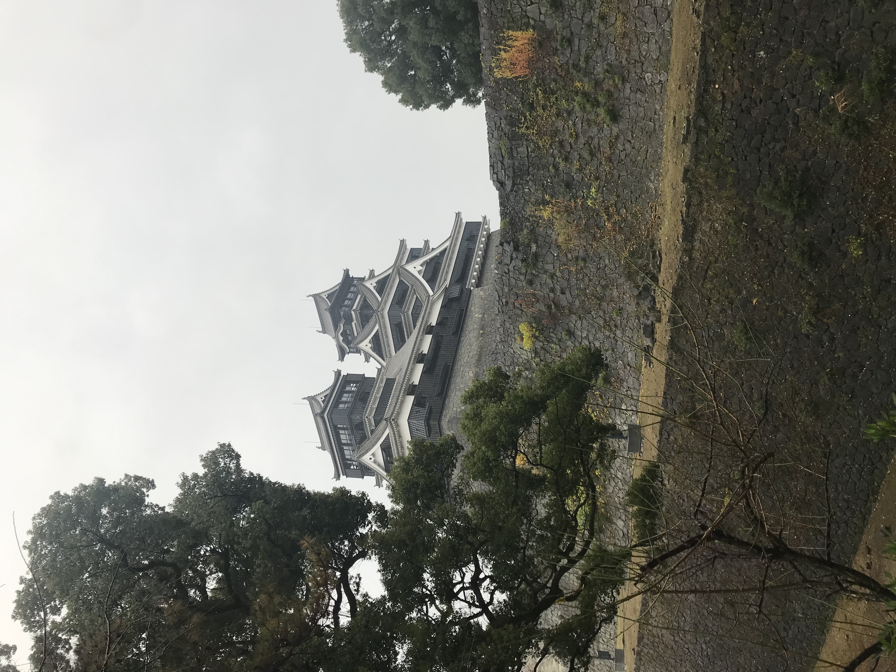

후쿠오카 여행
< 뒤로 가기
벳푸


유후인

다자이후 텐만구

➡학문의 신 스가와라 미치마사토를 모시는 덴만구(천만궁)의 총본궁
텐진 크리스마스 마켓

구마모토 성

➡구마모토성에는 광대한 부지와 독자적인 건축양식 안에 에도시대 번주의 생활상과 역사를 알 수 있는 단서가 많이 남아 있다. 또한, 축성의 명수라 불리던 가토 기요마사가 곳곳에 담은 당시의 토목과 건축의 최신기술도 볼 수 있다